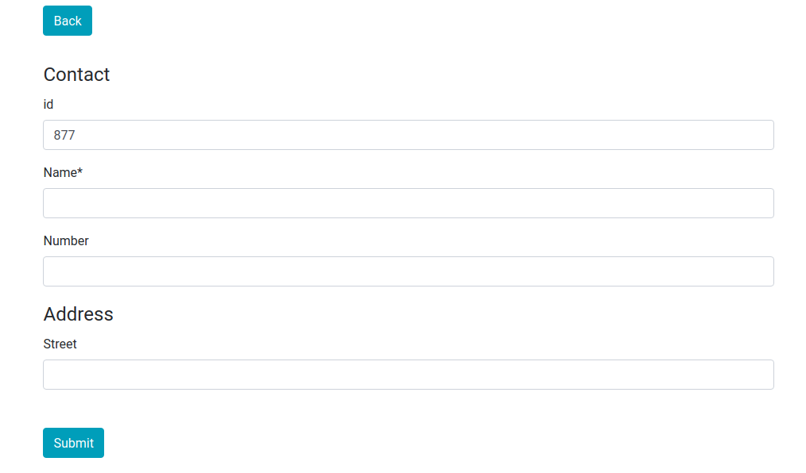
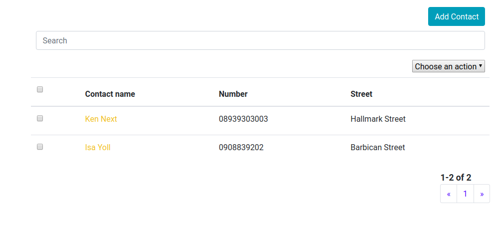
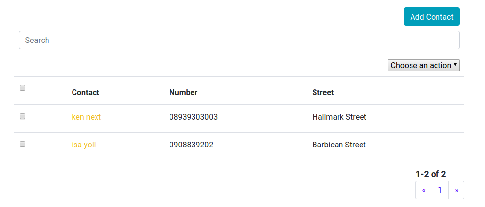

react-crud-admin
react-crud-admin is inspired by the Django Admin Interface. In the spirit of Django admin it opts for component customization by inheritance. The create-read-update-delete pattern is something that is encountered in a lot of apps. By creating a single component that lists entries and allows adding/changing it becomes possible to implement a DRY approach.
Since React is primarily a UI library and there are a litany of backends, react-crud-admin does not implement any backend specific features but allows the developer to provide custom implementations.
Getting Started
Installation
Install the library,
npm install react-crud-admin
Example
If you are starting a react project you can use create-react-app to speed up bootstrapping,
npm install create-react-app
npx create-react-app example
cd example
then within the example directory,
npm install react-crud-admin
Create a new file example.js in the \src folder, in that file add the following lines
import React from "react";
import Admin from "react-crud-admin";
import "react-crud-admin/css"; //optional css import
export default class Example extends Admin {
constructor() {
super();
this.name = "Contact"; // name of the objects
this.name_plural = "Contacts"; // name of the objects in plural
this.list_display_links = ["name"]; // which property of the object is clickable
this.list_display = ["name", "number", "address.street"]; // a list of properties of the object to displayed on the list display page
}
get_queryset(page_number, list_per_page, queryset) {
// the actual array containing objects to be displayed
return [
{
id: 1,
name: "Joe Next",
number: "08939303003",
address: { street: "Hallmark Street" }
},
{
id: 2,
name: "Isa Yoll",
number: "0908839202",
address: { street: "Barbican Street" }
}
];
}
}
then in index.js do
import React from "react";
import ReactDOM from "react-dom";
import Example from "./example.js";
ReactDOM.render(<Example />, document.getElementById("root"));
The output in your browser should be

This is the list display view. At this point adding and editing objects will not be possible since we have not configured the add/change view. To do that we need to import the react-jsonschema-form package.
Edit example.js and add the following,
import React from "react";
import Admin from "react-crud-admin";
import Form from "react-jsonschema-form";
import "react-crud-admin/css"; //optional css import
export default class Example extends Admin {
constructor() {
super();
this.name = "Contact";
this.name_plural = "Contacts";
this.list_display_links = ["name"];
this.list_display = ["name", "number", "address.street"];
}
get_queryset(page_number, list_per_page, queryset) {
return [
{
id: 1,
name: "Ken Next",
number: "08939303003",
address: { street: "Hallmark Street" }
},
{
id: 2,
name: "Isa Yoll",
number: "0908839202",
address: { street: "Barbican Street" }
}
];
}
get_form(object = null) {
let schema = {
title: this.name,
type: "object",
required: ["name"],
properties: {
id: {
type: "number",
title: "id",
default: Math.floor(1000 * Math.random()) + 1
},
name: { type: "string", title: "Name", default: "" },
number: { type: "string", title: "Number", default: "" },
address: {
type: "object",
title: "Address",
properties: {
street: { type: "string", title: "Street" }
}
}
}
};
if (!object) {
return <Form schema={schema} />;
} else {
return <Form schema={schema} formData={object} />;
}
}
}
the get_form method is passed the current object. The method returns a react-json-schema Form component. The schema object is used to define a schema for the Form (and to provide validation). See more on react-jsonschema-form at react-jsonschema-form. You can also read more on JSON Schema at JSON Schema Tutorial
In get_form we check if an object exists displaying a preloaded form if it does and an empty one if it does not.
The output in your browser after clicking the Add Contact button should be

The output in your browser after clicking the first contact's name should be

Guide
List Display View
Data
Data is primarily injected through get_queryset.
get_queryset(page_number, list_per_page, queryset);
{
return [
{
id: 1,
name: "Ken Next",
number: "08939303003",
address: { street: "Hallmark Street" }
},
{
id: 2,
name: "Isa Yoll",
number: "0908839202",
address: { street: "Barbican Street" }
}
];
}
The get_queryset method returns the queryset array including objects to be displayed in the current display page. Returning an array may not be useful when asynchronous network calls are made to a remote backend using AJAX or window.fetch. A class method of the Admin component set_queryset can be used for asynchronous calls.
The example below returns the queryset in the current state object synchronously and sets a new queryset when the asynchronous call returns successfully. set_queryset invokes setState internally.
get_queryset(page_number, list_per_page, queryset);
{
fetch("/path/to/backend", { method: "get" }).then(response => {
if (response.ok) {
this.set_queryset(response.results);
}
});
return queryset;
}
It is important to note that get_queryset returns only items to be listed in the current display view/page. It is necessary to use the arguments page_number and list_per_page for fetching data from the backend. This allows us to implement pagination.
get_queryset(page_number, list_per_page, queryset);
{
let backend = "/path/to/backend";
let path =
backend +
"&limit=" +
list_per_page +
"&skip=" +
(page_number - 1) * list_per_page;
fetch(path, { method: "get" }).then(response => {
if (response.ok) {
response.json().then(results => {
this.set_queryset(results.data);
this.set_total(results.total);
});
}
});
return queryset;
}
set_total is used to set the total number of items available. For example if list_per_page is 10
and there are a total 100 records in the backend results.data will have 10 items and results.total is 10. Please note that it is the responsibility of the backend to return these values in whatever format.
set_queryset is just,
set_queryset(queryset);
{
this.setState({ queryset: queryset });
}
and set_total is ,
set_total(total);
{
this.setState({ total: total });
}
It is also possible to set a fixed queryset using queryset property.
this.queryset = [
{
id: 1,
name: "Ken Next",
number: "08939303003",
address: { street: "Hallmark Street" }
},
{
id: 2,
name: "Isa Yoll",
number: "0908839202",
address: { street: "Barbican Street" }
}
];
This is always overriden by get_queryset.
UI Customisation
Display
List Display
The get_list_display method returns a list/array of properties/field names of the objects in the queryset to be displayed on the list display page. It can be overridden by the member variable
listdisplay. A property is any string that should exist in the objects within
a queryset and works with lodash's .at function. See more at Lodash
let object={ name : "any name",{ address : { street : "any"}},emails: ["any@any.com"]}
The properties "name","address.street" and "emails[0]" are all acceptable. In our example we use,
this.list_display = ["name", "number", "address.street"];
We can also use,
get_list_display();
{
return ["name", "number", "address.street"];
}
List Display Links
The get_list_display_links method returns the list/array of properties of the objects in the queryset that are clickable (and redirect to the add/change view) when displayed on the list display page. It can be overridden by the member variable
list_display_links. A property is any string that should exist as a property in the objects within
a queryset and works with lodash's _.at function.
In our example we use,
this.list_display_links = ["name"];
in the constructor but we could have used,
get_list_display_links(){
return ['name']
}
Header Transforms
Table headers in the list display view are obtained from property names in get_list_display method by default. There are certain cases when one would like to customise these headers. get_header_transforms does just that. As an example
get_header_transforms();
{
return {
name: function(header) {
return "Contact " + header;
}
};
}
Should produce

Header transforms can be defined using the instance variable header_transforms (which is always overridden by get_header_transforms).
this.header_transforms = {
name: function(header) {
return "Contact " + header;
}
};
In summary get_header_transforms returns an object whose properties are field names corresponding to properties of any object in the queryset and whose values are transform functions.
Field Transforms
Field transforms return an object whose properties are field names corresponding to properties of any object in the queryset and whose values are transform functions. They are used to transform the values of objects within the queryset. For example to transform every "name" property of all the objects in the queryset to lower case we use,
get_field_transforms();
{
return {
name: function(content, object) {
return content.toLowerCase();
}
};
}
or
this.field_transforms = {
name: function(content, object) {
return content.toLowerCase();
}
};
The first argument of the transform function is the content to be displayed while the second argument is the current object.
This produces

All the contact names have been turned to lower case. Field transforms apply to full columns on the data table in the display view. It is possible to replace fields with React components like images and buttons. As an example suppose a column has fields which contain image urls, we can replace each field with a corresponding image.
this.field_transforms = {
image_url: function(content, object) {
return <img src={content} />;
}
};
Extra Fields
It is sometimes desirable to create new fields that are not properties of any of the objects in the queryset. As an example, we create a new field that displays the current time using the moment library.
get_extra_fields();
{
return {
now: function(object, label) {
return moment(new Date()).format("LLL");
}
};
}
or somewhere in the constructor,
this.extra_fields = {
now: function(object, label) {
return moment(new Date()).format("LLL");
}
};
The get_extra_fields method returns an object whose properties are extra field names not corresponding to properties of any object in the queryset and whose values are display functions. This will create extra fields that are not tied to objects. Extra fields have to be manually included in the get_list_display in order to appear in the list display page.
Adding the get_extra_fields method is not enough to display the newly created field. We must add the field to list_display .
this.list_display = ["name", "number", "address.street", "now"];
Don't forget to add import moment from "moment"; at the top of the file. The output is,

Pagination
get_list_per_page method returns the number of items to be listed in a page. Can be overridden by list_per_page.
this.list_per_page = 10;
or
get_list_per_page();
{
return 10;
}
Search
Search is not implemented by default. One has to implement the search(term,queryset) method.
From our previous example, we can implement search by matching the search term with the "name" property of all objects in the queryset. The method returns a filtered queryset. Optionally, if search requires an asynchronous call to a backend, one can use set_queryset.
search(term, queryset);
{
let filtered_queryset = [];
for (var object of queryset) {
if (object.name.search(new RegExp(term, "i")) >= 0) {
filtered_queryset.push(object);
}
}
return filtered_queryset;
}
or asynchronously
search(term, queryset);
{
fetch("/path/to/backend/search?q=" + term, { method: "get" }).then(
response => {
if (response.ok) {
this.set_queryset(response.results);
}
}
);
return queryset; //remember to return queryset synchronously
}
We can enable live search by
this.live_search = true;
default is false.
Sorting
Sorting is not implemented by default. Sorting can be achieved by implementing the sort_by method,
sort_by(sort_fields, queryset);
{
}
sort_fields is an array containing objects whose properties are properties of objects in the queryset and whose values are either "asc" or "desc". As an example, for a queryset
[
{
id: 1,
name: "Joe Next",
number: "08939303003",
address: { street: "Hallmark Street" }
},
{
id: 2,
name: "Isa Yoll",
number: "0908839202",
address: { street: "Barbican Street" }
}
];
we can have sort_fields equal to
[{ name: "asc" }, { number: "desc" }, { address: "asc" }];
For our example, we implement sort_by using,
sort_by(sort_fields, queryset); //from adminjs
{
let item = sort_fields[sort_fields.length - 1];
let pairs = _.toPairs(item);
let field_names = pairs.map(item => item[0]);
let field_orders = pairs.map(item => item[1]);
return _.orderBy(queryset, field_names, field_orders);
}
We use the lodash library to sort the current queryset and return an updated one. We only use the latest sort order by examining the last item of the sort_fields array. In a practical application,
a backend will perform the sort operations and we will use set_queryset.
sort_by(sort_fields,queryset)
{
fetch('/path/to/backend/sort',{
'method': 'post',
'body': JSON.stringify(sort_fields)}).then((response)
{
if(response.ok}
{
response.json().then((results)=>
{
this.set_queryset(results.data);
})
}
})
return queryset;
}
It is also important to define the member variable is_object_equal which defines equality between objects in a queryset. This variable is used to test if an object has been previously selected using the radio buttons in the display view. By default,is_object_equal is
this.is_object_equal = function(a, b) {
return a == b;
};
This may not be sufficient for some applications. For example we might want to use the object's id property to check equality.
Sorting can achieved in the list display view by clicking on the table headers corresponding to property names.
this.is_object_equal = function(a, b) {
return a.id == b.id;
};
Actions
get_actions returns an actions object whose properties are action names and values are action methods. get_actions can be overridden by the actions member variable.
Each actions object property (e.g. "delete") is passed an array of selected objects. One can then handle those objects. Actions will appear on the list display page within a dropdown. The default "delete" action method is not implemented.
We can implement the delete action for our previous example,
import React from 'react';
import Admin from "react-crud-admin";
import Form from "react-jsonschema-form";
import moment from "moment";
import "react-crud-admin/css";//optional css import
var data=[
{id: 1, name: 'Ken Next', number: '08939303003',address:{ street: "Hallmark Street"}},
{id: 2,name: 'Isa Yoll', number: '0908839202',address:{ street: "Barbican Street"}}
];
export default class Example extends Admin
{
......
......
......
get_queryset()
{
return data
}
get_actions()
{
return { "delete" : (selected_objects)=>{
let total=data.length;
for(let object of selected_objects)
{
data.splice(data.indexOf(object),1);
}
this.set_queryset(data);
this.set_total(total-selected_objects.length);
}
}
}
}
Filters
get_filters can be used to implement filters for the queryset.
get_filters();
{
return {
by_street_name: {
options: [
{ value: "Hallmark Street", label: "Hallmark Street" },
{ value: "Barbican Street", label: "Barbican Street" }
],
filter_function: (option, queryset) => {
let grouped = _.groupBy(queryset, "address.street");
return _.has(grouped, option.value) ? grouped[option.value] : [];
}
},
by_id: {
options: [
{ value: "even", label: "even" },
{ value: "odd", label: "odd" }
],
filter_function: (option, queryset) => {
let grouped = _.groupBy(queryset, contact => {
return contact.id % 2 == 0 ? "even" : "odd";
});
return _.has(grouped, option.value) ? grouped[option.value] : [];
}
}
};
}
The get_filters method returns an object whose properties are filter names. The example above returns 2 filters. The first is a filter "by_street_names" that filters based on the street addresses of the contacts. Each filter object has two properties : "options" and "filter_function". "options" is an array of options objects which have a "value" and "label" properties. The "label" will appear in the UI while the "value" is used for processing. This is similar to the select HTML tag. For asynchronous operations, a method to set the options of a filter is provided. set_filter_options takes two arguments,
set_filter_options(filter_name, options);
the name of the filter and the options array of the filter.
The "filter_function" is a function that performs filtering. It has two arguments, "option" which is the selected "option" and the current queryset. It must return a queryset. "option" is one of "options" array. For asynchronous cases, set_queryset and set_total methods can be used to set the queryset after backend filtering.
The second filter "by_id" filters the queryset by even and odd id property. The filter UI uses React Select component.
Add/Change View
Starting from version 1.0.48 the add/change view is presented in a modal.
Forms
We can add submit handlers for the form in our example,
....
....
....
export default class Example extends Admin
{
.....
.....
.....
get_form(object=null)
{
let schema = {
title: this.name,
type: "object",
required: ["name"],
properties: {
id: {type: "number", title: "id", default: Math.floor(1000*Math.random())+1 },
name: {type: "string", title: "Name", default: ""},
number : {type: "string", title: "Number", default: ""},
address : {type: "object", title: "Address",
properties : {
street : { type : "string",title : "Street"}
}
}
}
};
if(!object)
{
return <Form schema={schema} onSubmit={this.form_submit.bind(this)} />
}
else
{
return <Form schema={schema} formData={object} onSubmit={this.form_submit.bind(this)} />
}
}
....
....
....
form_submit(form)
{
let contact=form.formData;
if(form.edit)
{
this.state.queryset.splice(this.state.queryset.indexOf(this.state.object),1,contact);
this.response_change();
}
else
{
this.state.queryset.push(contact);
this.response_add();
}
}
......
......
......
}
The submit handler checks to see if an object is being edited and replaces it with the edited object. If the object is being added, the method appends it to the state.queryset object.
Post Submit
response_add or response_change can be called after a new object is created or edited respectively. These functions should implement behaviour after a successful form submission. By default these functions are both defined as,
function()
{
this.setState({display_type :display_type.list,
object :null,
queryset: this.get_queryset(this.state.page_number,this.list_per_page,this.state.queryset)
});
}
This sets the display type to "list", changes the object to null and invokes get_queryset to fetch the latest data.
Permissions
has_add_permission , has_change_permission and has_module_permission methods are used to control access.
The has_add_permission method takes no arguments and should return a boolean that signifies wether the user can add a new object. It simply hides the Add button.
The has_change_permission method takes the current object being edited, state.object, as an argument and should return a boolean that signifies wether the user can edit an object. It simply disables all list_display_links.
The has_module_permission method takes no arguments and should return a boolean that signifies wether the user should load the component. It simply shows an error message after an unauthorized access attempt.
Miscellany
state object
The default state object has the following properties,
| Property | Default Value | Description |
|---|---|---|
queryset |
[] |
Can be set with set_queryset |
page_number |
1 |
|
total |
0 |
Total number of items. Can be set with set_total. |
display_type |
"list" |
Current display. Can be "list" or "change" for add/change view |
object |
null |
Current object to be edited (or created) in the add/change view |
selected_objects |
Empty set | The Set class a wrapper around array that implements set logic |
Care must be taken note to override the state object values especially at initialization stages e.g. in the constructor or component_will_mount .
Progress Indicator
show_progress and hide_progress can be used in the both the list display and add/change view to display and hide a progress indicator. render_progress can be used to override the default progress indicator component to be rendered. render_progress has one argument which is a boolean denoting whether or not to render a progress indicator. For example,
render_progress(loading);
{
if (loading) {
return <progress />;
}
}
render_progress should return a component.
ESDOC API Documentation.
The API documentation generated with esdoc.js is available here.
Component Props
There are many instances where customising the react-crud-admin component using component props is beneficial. Perhaps the component is to be used as a child component that reacts to changes in the parent component. For those cases it is possible to use props to customise the Admin component.
All members and properties of the Admin component class can be assigned using React component props. All functions passed as props are automatically bound to the Admin thus making them class members. This means that this will reference the Admin component despite being used outside the component.
The end result will look like,
<Example
queryset={data}
search={search}
form_submit={form_submit}
get_form={get_form}
get_header_transforms={get_header_transforms}
get_field_transforms={get_field_transforms}
get_extra_fields={get_extra_fields}
get_actions={get_actions}
get_filters={get_filters}
name={name}
name_plural={name_plural}
list_display={list_display}
list_display_links={list_display_links}
/>
You can use bind_exclude prop which is an array that contains names of methods that should be excluded from automatic binding, allowing this reference to refer to something else.
A complete example is available at link.
Example
The file containing the example used here is available at link.
Advanced
Rendering
There are two main render like methods that combine to form the Component.render method of react-crud-admin. The first is render_list_page which renders the current list view and the second is render_change_page which renders the add/change view. Only one of these views is active at a time and forms the Component.render for the component. A full implementation is given below,
render();
{
if (!this.has_module_permission()) {
return (
<div>
{" "}
<h1> Permission Denied </h1>
</div>
);
}
if (this.state.display_type == display_type.list) {
return this.render_list_page();
} else {
//Important: the next two lines are for URL navigation and handling the browser back button
this._change_uuid = uuidv1();
history.pushState(
{},
"Change View",
window.location.hash + "/change/" + this._change_uuid
);
return this.render_change_page();
}
}
You can also listen to events that are triggered when the display is about to change or has changed,
display_will_change(display_type,object)
{
}
and
display_changed(display_type,object)
{
}
display_type is either "list" or "change".
List Page
It is possible to add components above and below the list view using render_above_list_view and render_below_list_view methods. Both methods take no arguments and by default return null. These methods can be overridden to return components.
render_list_page();
{
return (
<div>
{this.render_above_list_view()}
{this.render_list_view()}
{this.render_below_list_view()}
</div>
);
}
Within the render_list_view method itself, customisations are possible. The full implementation of render_list_view is,
render_list_view();
{
return (
<div>
{this.render_add_button()}
{this.render_below_add_button()}
{this.render_search_field()}
{this.render_below_search_field()}
{this.render_actions()}
{this.render_below_actions()}
{this.render_filters()}
{this.render_below_filters()}
{this.render_table()}
{this.render_below_table()}
{this.render_progress(this.state.loading)}
{this.render_below_progress()}
{this.render_pagination()}
</div>
);
}
The render_below_* methods are used to add components below the add button, search field, actions,filters,list table and progress indicator. By default these methods return null. These methods can be overridden to return components.
It is also worth noting that one can hide any of the components by the overriding their methods and returning null. For example to hide the actions component, we override the render_actions method.
render_actions();
{
}
The Add/Change Page
It is possible to add components above and below the add/change view using render_above_change_view and render_below_change_view methods. Both methods take no arguments and by default return null. These methods can be overridden to return components. The full implementation is
render_change_page();
{
return (
<div>
{this.render_above_change_view()}
{this.render_change_view()}
{this.render_below_change_view()}
</div>
);
}